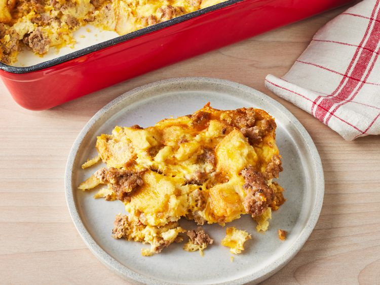

Breakfast Sausage Casserole

Description
Make the holiday morning breakfast extra special with this delicious sausage breakfast casserole. The entire casserole is assembled the night before, so all you'll need to do on Christmas morning is pop it in the oven (and it'll be done by the time everyone is finished opening their presents)!
Ingredients
- 1 pound ground pork sausage
- 1 teaspoon mustard powder
- ½ teaspoon salt
- 4 large eggs, beaten
- 2 cups milk
- 6 slices white bread, toasted and cut into cubes
- 8 ounces mild Cheddar cheese, shredded
Steps
- Brown the sausage and drain the excess grease.
- In a bowl, combine the mustard powder, egg, salt, and milk.
- Then add the cooked sausage, bread, and cheese.
- Pour into a baking dish and store covered in the refrigerator overnight (or at least 8 hours).
- Bake until eggs are set and the casserole is warmed through.